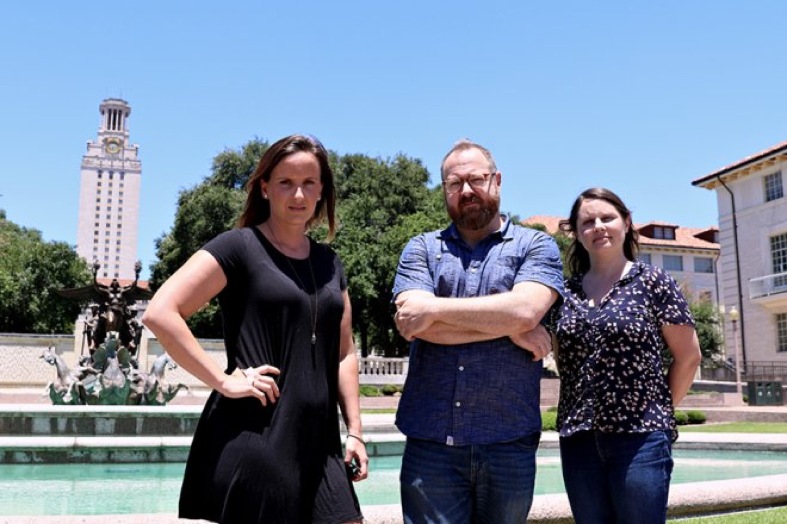

(From left to right) Coordinating producer Hillary Pierce, director Keith Maitland and producer Megan Gilbride premiered their “Tower” documentary at the South By Southwest film festival this past spring. The documentary is set for a theatrical release on October 12th.
Austin-based director Keith Maitland first learned of the Tower shooting from his seventh-grade Texas history teacher. The topic wasn’t part of the school’s curriculum, but the teacher, a UT alumna who witnessed the shooting, felt compelled to share her story.
“From the moment she first told me about her experience at the shooting, I’ve always put myself in those shoes,” Maitland said.
In 2006, Maitland came upon a Texas Monthly article featuring a collection of accounts from students, police officers and others who had found themselves caught in the crisis. Maitland had never heard their stories and didn’t want other accounts to go untold. So he went to work.
His curiosity eventually gave way to “Tower,” a documentary that tells the story of an attack that has largely faded from the public dialogue through the eyes of its survivors. Coordinating producer Hillary Pierce said the filmmakers reached out to eyewitnesses by putting out calls for stories and advertising on Facebook.
“It was amazing how many people came forward because they’d never been asked to talk about it before,” Pierce said. “Just kind of putting that out there and saying, ‘We want to hear your story’ — people responded.”
Gathering the information for “Tower” was a six-year project, starting in 2006 before production began in 2012. Maitland said they wanted the film to include a variety of personal perspectives so viewers would identify with at least one of the characters’ stories. “It was a real challenge deciding [which stories to use],” Maitland said. “You have to learn everything you can about the subject matter before making those big decisions, because you don’t want to regret leaving out something.”
“Tower” depicts its eye-witness stories with rotoscope animation, a technique that uses footage of real actors overlaid with painted colors, rather than pure live action. Maitland said the decision was made partially out of necessity because he knew UT would not allow the crew to reenact the events on campus with actors, guns and blood, but it was also a way for the film to appeal to younger audiences.
“We wanted high school and college kids to see themselves reflected on that screen,” Maitland said. “[In the film], we are looking at young innocent people going through the events of that day, not as the memories from 50 years ago, but as a visceral first-hand experience with immediacy.”
The picture made its debut at this year’s South By Southwest film festival, where it won the Grand Jury Prize and the Audience Award for best documentary feature, and is set for a theatrical release on Oct. 12.
Maitland said he hopes “Tower” can push forward a dialogue about gun violence at a time when mass shootings have become increasingly common. To help start this conversation, the crew plans to host screenings at college campuses across the nation later this year.
While the picture portrays a dark moment in UT’s history, producer Megan Gilbride said “Tower” is not meant to frighten viewers by remembering the tragedy, but is instead intended to highlight the strength and heroism of many involved.
“Today, when we watch these events unfold, it’s hard not to be beaten down by what feels like the monsters that we’re seeing,” Gilbride said. “The story that ‘Tower’ is telling is really about the amazing humanity and the sacrifice and caring that strangers felt for each other. I think we can see our better selves in those people.”